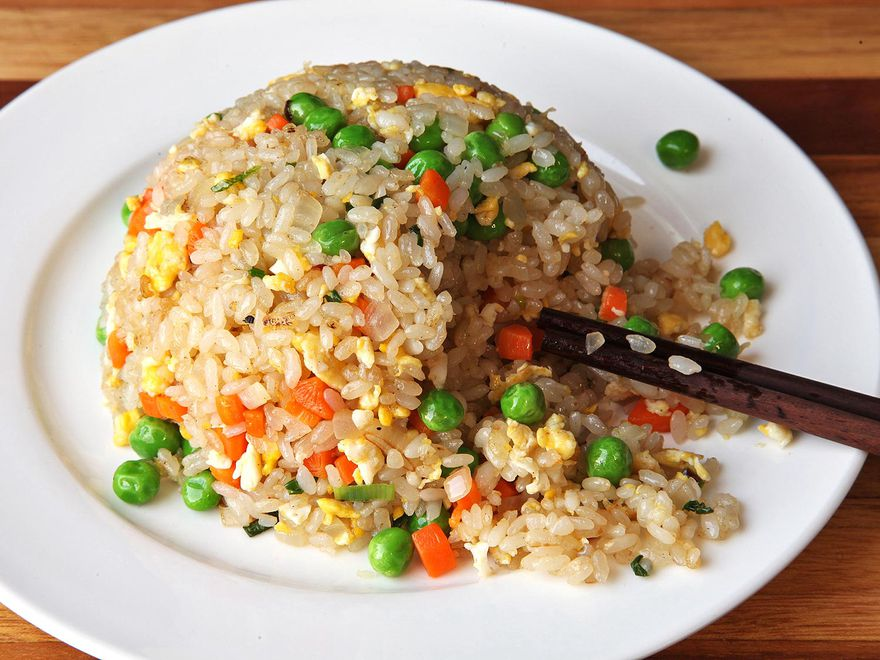

J. Kenji López-Alt's Easy Fried Rice Recipe

Fried Rice
Source: https://www.seriouseats.com/easy-vegetable-fried-rice-recipe
Fried rice comes in many styles. In China, it's typically lightly seasoned with salt and perhaps a little soy sauce or another sauce, along with scant amounts of aromatics and meat. In the Chinese-American tradition, you'll find it made with bigger chunks of meat, and much more sauce.
Ingredients
- 2 cups cooked white rice (12 ounces; 350g)
- 2 tablespoons (30ml) vegetable or canola oil, divided
- 1 small onion, finely chopped (4 ounces; 115g)
- 1 medium carrot, peeled and cut into small dice (3 ounces; 85g)
- 2 scallions, thinly sliced (1 ounce; 30g)
- 2 medium cloves garlic, minced (about 2 teaspoons; 5g)
- 1 teaspoon (5ml) soy sauce
- 1 teaspoon (5ml) toasted sesame oil
- Kosher salt and ground white pepper
- 1 large egg
- 4 ounces (115g) frozen peas
Steps
- If using day-old rice, transfer to a medium bowl and break the rice up with your hands into individual grains before proceeding. Heat 1/2 tablespoon (7ml) vegetable oil in a wok over high heat until smoking. Add half of rice and cook, stirring and tossing, until the rice is pale brown and toasted and has a lightly chewy texture, about 3 minutes. Transfer to a medium bowl. Repeat with another 1/2 tablespoon oil and remaining rice.
- Return all the rice to the wok and press it up the sides, leaving a space in the middle. Add 1/2 tablespoon (7ml) oil to the space. Add onion, carrot, scallions, and garlic and cook, stirring gently, until lightly softened and fragrant, about 1 minute. Toss with rice to combine. Add soy sauce and sesame oil and toss to coat. Season to taste with salt and white pepper.
- Push rice to the side of the wok and add remaining 1/2 tablespoon (7ml) oil. Break the egg into the oil and season with a little salt. Use a spatula to scramble the egg, breaking it up into small bits. Toss the egg and the rice together.
- Add frozen peas and continue to toss and stir until peas are thawed and every grain of rice is separate. Serve immediately.